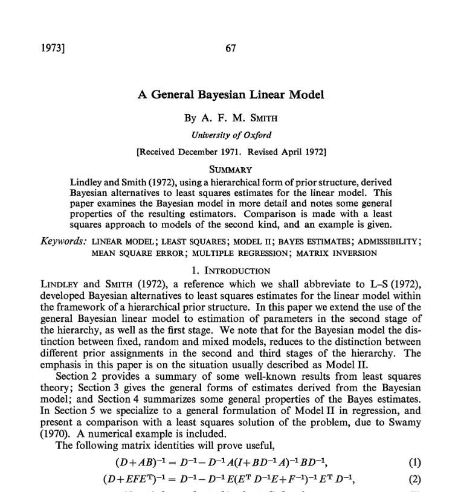
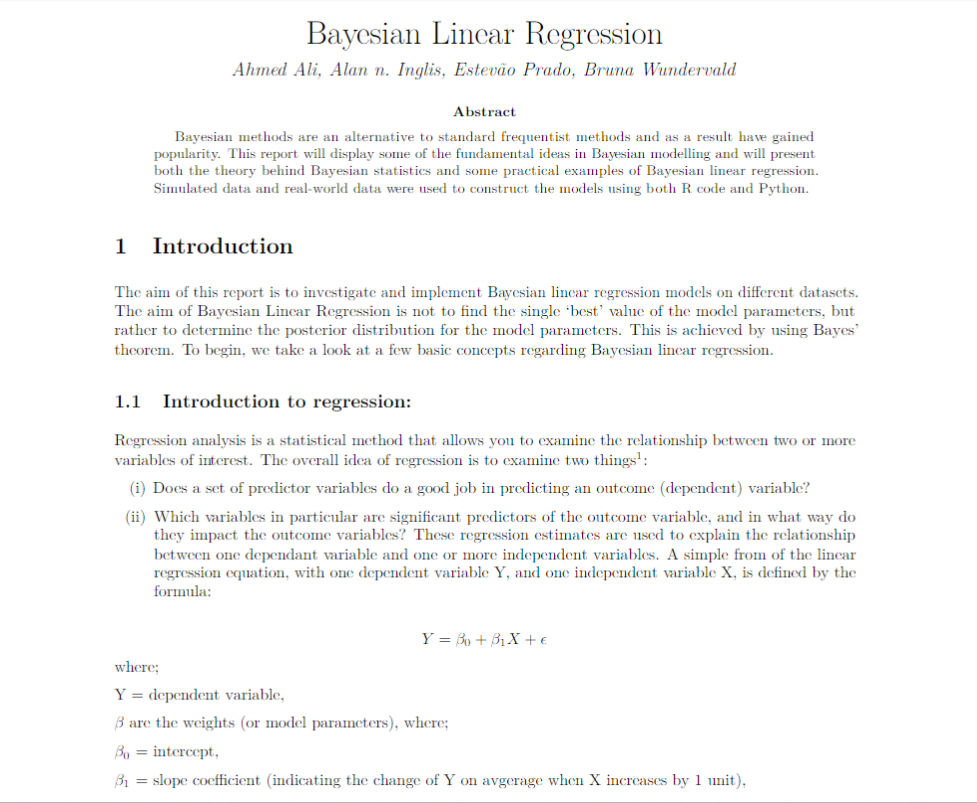
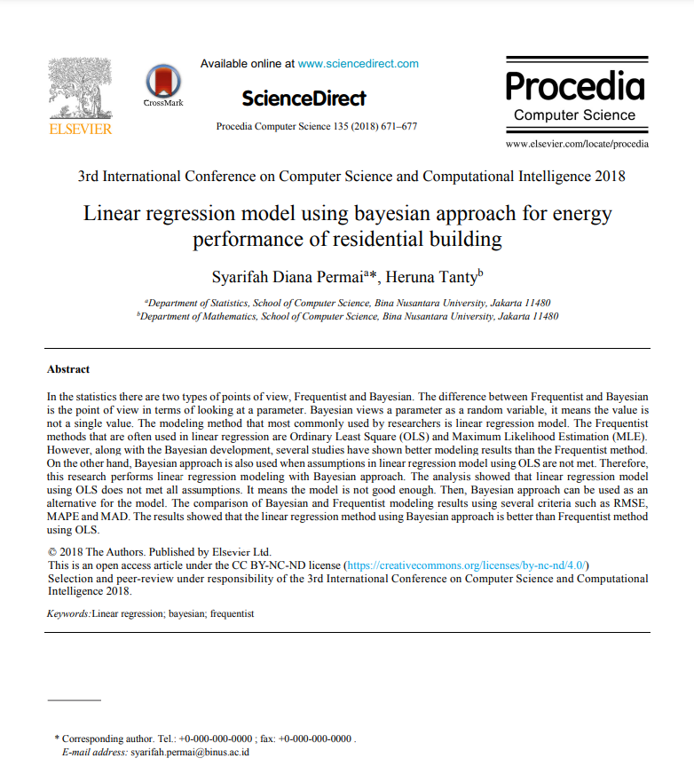

Project Proposal
For my project, I want to do a theory based project that explores an alternative to OLS and MLE linear regression: Bayesian linear regression. From the little bit I’ve looked up on the matter, Bayesian LR is differentiated from OLS and MLE LR by the fact that prior information on the parameters of the linear regression is given and incorporated into the estimation of the parameters. In my report, I would like to provide a general explanation of Bayesian LR, it’s advantages and disadvantages, use cases, give comparisons between Bayesian LR and OLS and MLE LR, and possibly even include an application example where OLS/MLE LR and Bayesian LR models are constructed and their performances compared. Below are three academic articles I’ve found that I believe will provide sufficient resources to do this project:
Article 1

Link: https://www-jstor-org.turing.library.northwestern.edu/stable/2985129?seq=1
In this paper, Smith examines the Bayesian model and its resulting estimators, and compares them OLS model estimators. An example comparing the two approaches is also given.
Article 2

Link: https://www.researchgate.net/publication/333917874_Bayesian_Linear_Regression
This article serves as an introduction to Bayesian statistics, breaking down the fundamental ideas in Bayesian modelling, and giving theoretical and practical examples of Bayesian linear regression.
Article 3
 Link: https://www.sciencedirect.com/science/article/pii/S1877050918315126
The final article gives examples when Bayesian LR might be a better option than Frequentist approaches to LR (OLS and MLE), and argues that, generally, Bayesian LR is a better approach than a Frequentist approach to LR.